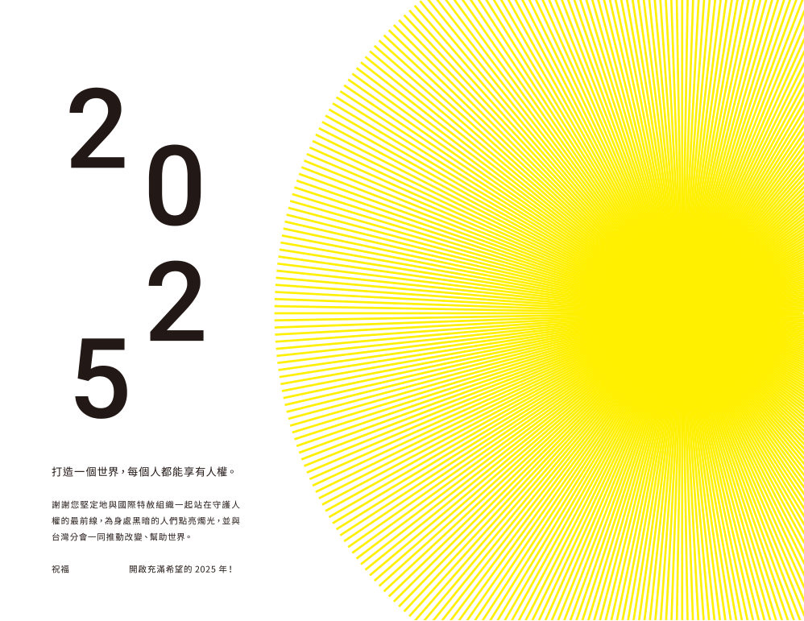
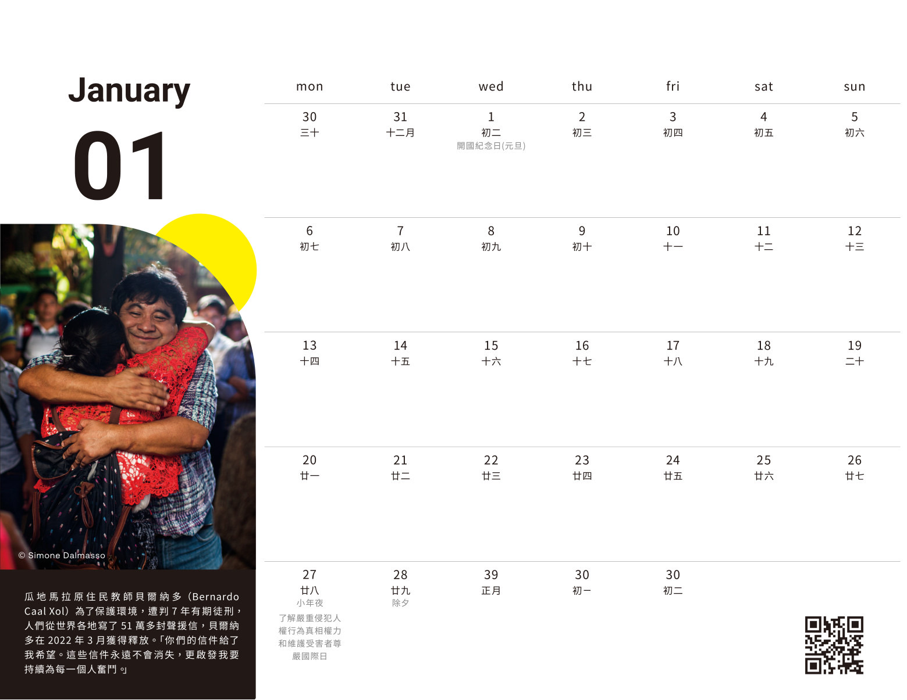
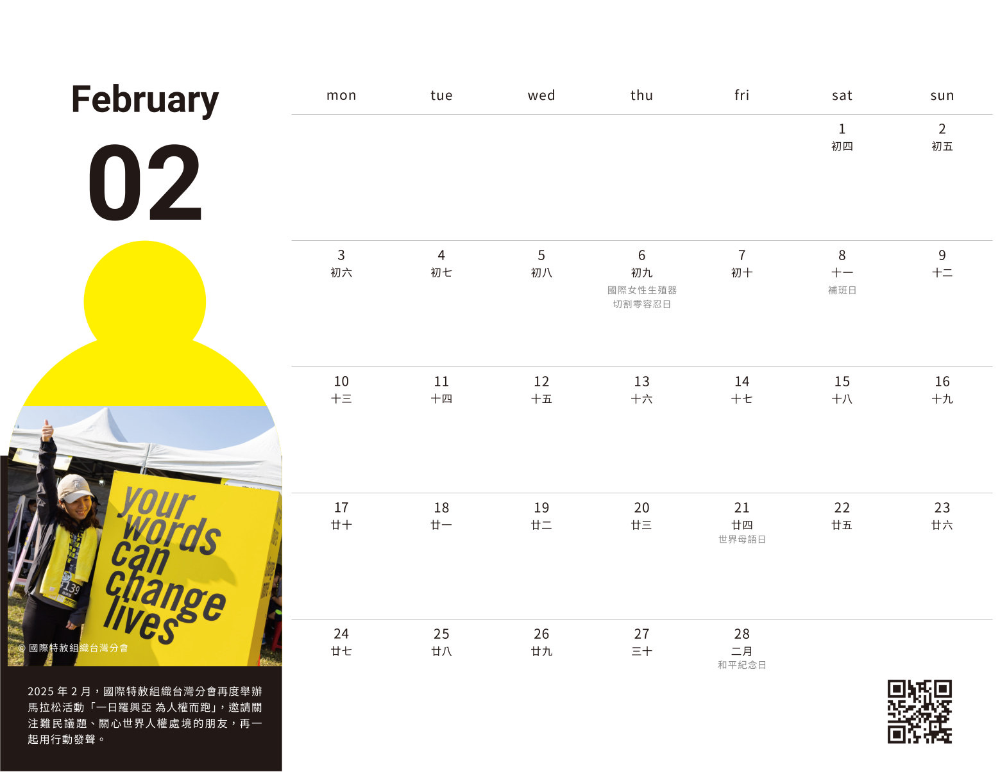
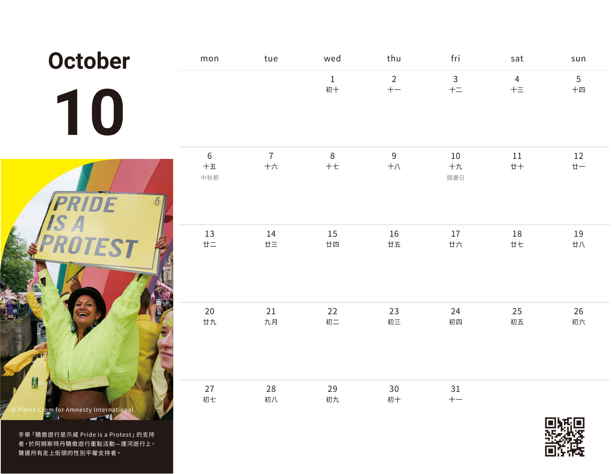
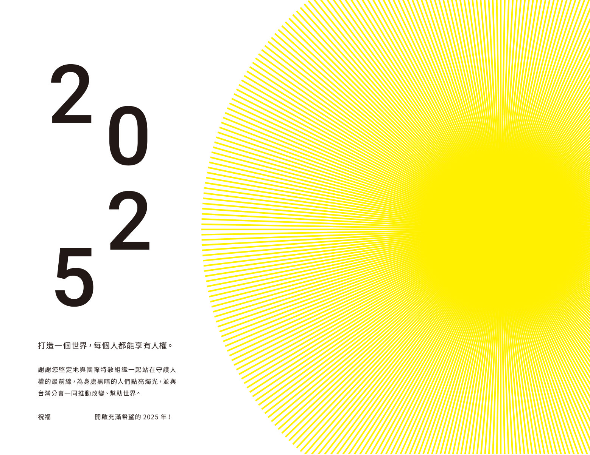
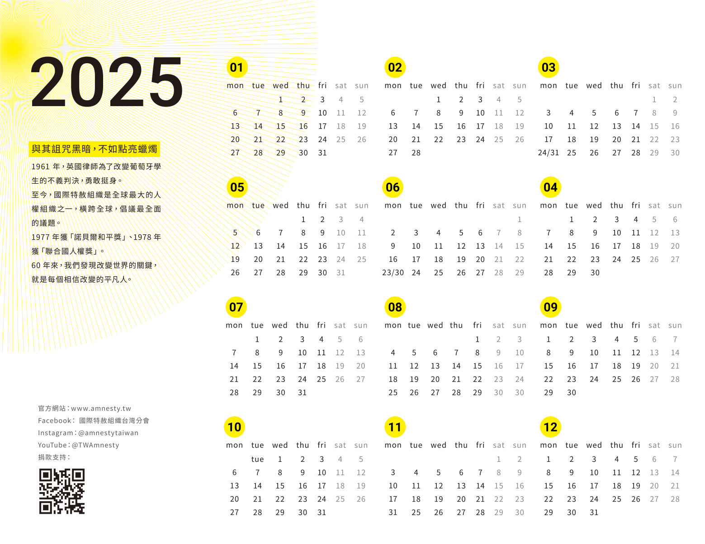

Amnesty International Taiwan 2025 Desk Calendar
A 2025 desk calendar made as a thank-you gift for supporters of Amnesty International Taiwan, built on the organisation's signature yellow and a month-by-month selection of human-rights photography.

About
the calendar
Amnesty International Taiwan sends a desk calendar to its supporters each year. The 2025 edition opens with a thank-you note and a sunburst of fine yellow lines, a light radiating from the centre.
Each month pairs a photograph with a short caption. The layout keeps Amnesty's yellow and black, leaving the dates and the photographs to carry the page.
A photograph for every month
February marks the marathon Amnesty Taiwan held for refugees. October celebrates Taiwan's marriage equality, with a photograph from the Pride march in Buenos Aires.
The pages
Each month opens with a full-width photograph, a bold shape in the month's colour and a short caption. Underneath sits a plain grid of dates, with a large numeral and a QR code.




